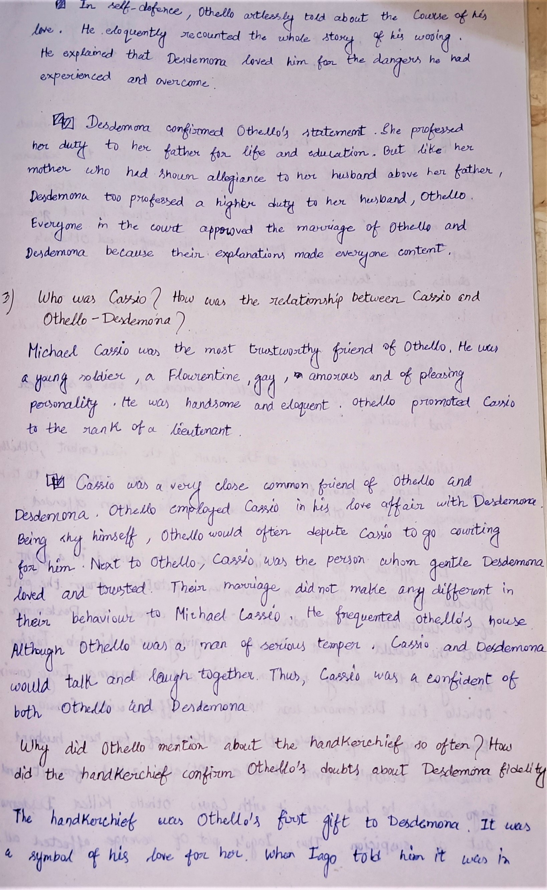
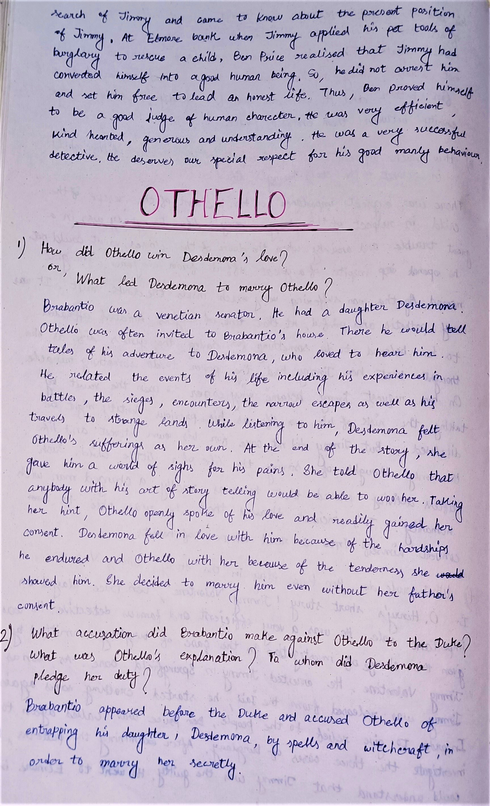
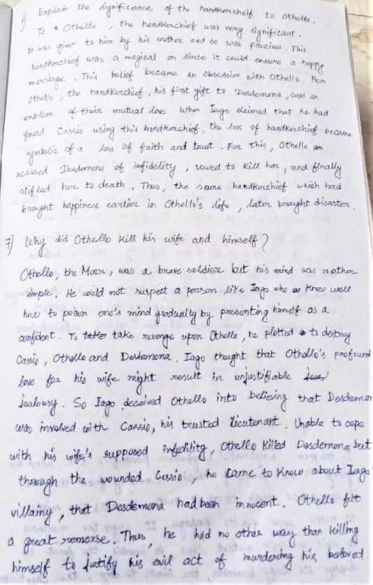
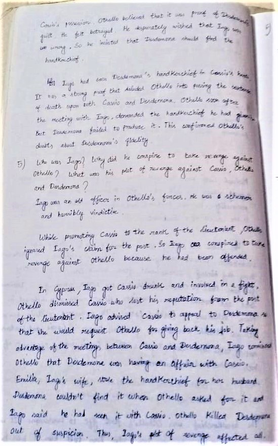
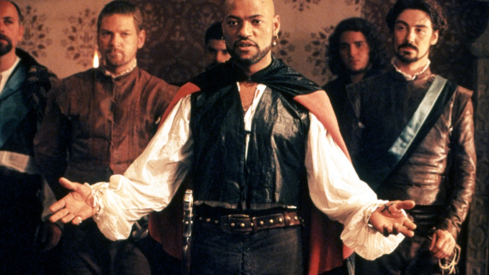
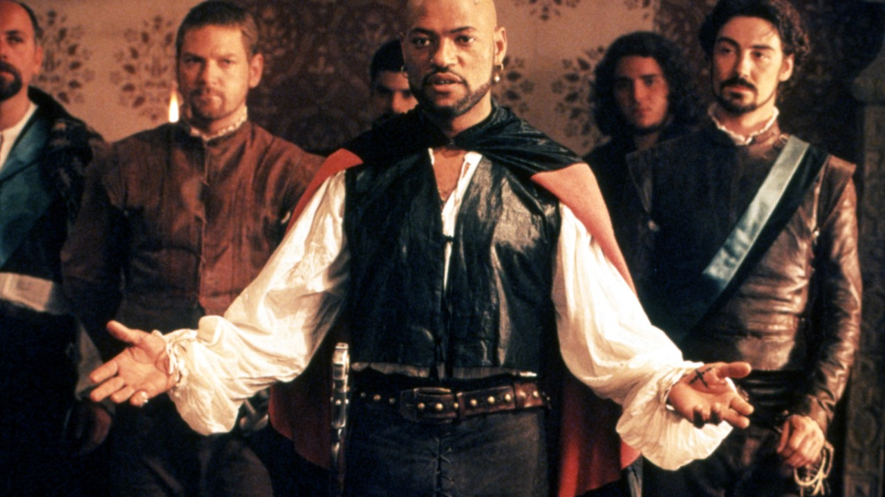

Othelo
    

Othello (written)
Q1> How did Othello win Desdemona’s love? Or What led Desdemona to marry Othello?
Ans> Brabantio was a venetian senator. He had a daughter Desdemona. Othello was often invited to Brabantio’s house there he would tell tales of his adventure to Desdemona, who loved to hear him. He related the events of his life including his experiences in battles, the sieges, encounters, the narrow escape as well as his travels to stage as her own. At the end of the story, she gave him a word of sings for his pains. She told Othello that anybody with his art of story telling would be able to woo her. Taking her hint, Othello openly spoke telling would be able to her. Taking her hint, Othello openly spoke of his love and readily gained her consent Desdemona fall in love with him because of the hardships he endured and Othello with her because of the tenderness she showed him. she decided to marry him even without her father’s consent.